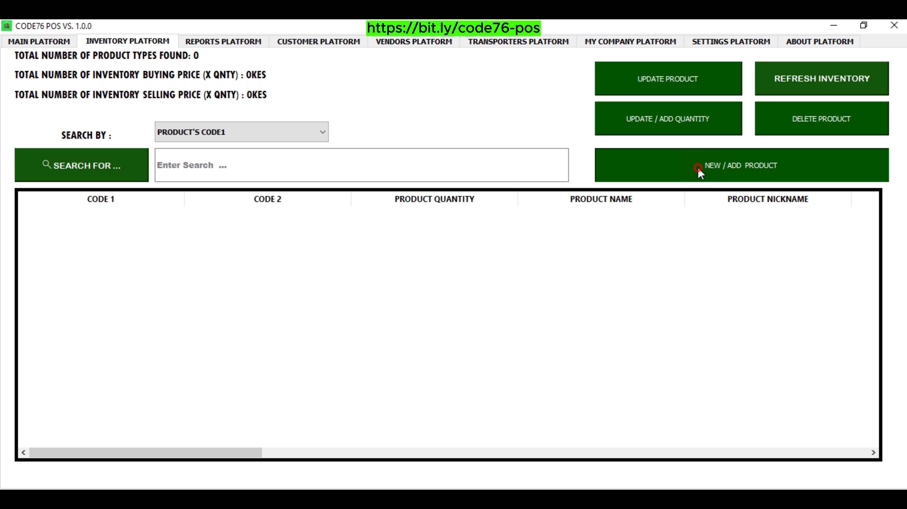

How hard is it to add or feed in your Product information to CODE76 POS ??? As an Interested Entrepreneur or Business Owner, the answer is: EASY & QUICK . The Best Part, its : SIMPLE !!! FAST!!! PROFICIENT !!! Don’t Believe me ? I HAVE PROOF !!! We just need to follow this Simple, Easy & Quick Steps. Follow along: * STEP 1: NAVIGATE TO THE INVENTORY PLATFORM OF CODE76 POS. * STEP 2: FEEDING IN YOUR PRODUCT INFO INTO CODE76 POS. * STEP 3: CONFIRM YOUR PRODUCT INFORMATION. * STEP 4: JUST REPEAT THE PROCESS TO ADD MORE PRODUCT INFORMATION. The Good News is : Although here we are mostly dealing with Shoes, this process can be applied to any other product you want. Now, Let Us Begin ...
STEP 1: NAVIGATE TO THE INVENTORY PLATFORM OF CODE76 POS.
Move your Cursor to and Select the INVENTORY PLATFORM tab header. The first page to you will see is the Inventory Display page. On The Inventory Display Page, there are features such as: Blue Buttons, Display Table and Labels. In this case now, We are Just interested in that blue “ADD/NEW PRODUCT” Button. You want to view the Inventory Entry Page. Go ahead and Click on that Button. Which will direct you to the Inventory Entry Page in the CODE76 POS.

STEP 2: FEEDING IN YOUR PRODUCT INFO INTO CODE76 POS.
Now that the Inventory Entry Page is Displayed, we start typing our Product information. Follow the entry box placeholders and labels as your guide. Fill in all the required product information such as: service code/id, service name, service group name or name 2, age restriction, etc. The Good News about CODE76 POS is that it is capable to stress-free you from calculations such as finding the Buying Price, Mark-Up % or Selling Price. You just need to know 2 and leave the rest empty an the calculation will be done for you automatically. For example, just type in the mark up & Buying Price to get Selling Price, or type in the Buying price and Mark up to find the Selling Price or Just type in the Buying Price & Selling Price to get the Mark up. Confirm your Product Information, before saving your Product information. Because you want to avoid making any Errors. If everything is Good, Go ahead and Click on the green “Save” Button. Which will save your service information and now direct you back to the Inventory Display Page in CODE76 POS.
STEP 3: CONFIRM YOUR PRODUCT INFORMATION.
Now redirected back to the Inventory Display Page, get to check if your current entered information appears in the inventory Display Table in CODE76 POS.
If it hasn’t appeared yet, please click on the “REFRESH INVENTORY” Blue Button on the top right.
As a result, your Product data will be secured, refreshed and will appear on the display table.
Notice also there is a Label on the top Left corner that indicates the number of products that are currently existing in the Inventory Database or Inventory Display Table.
The other labels indicates the Total Inventory Buying Price(x Quantity) and Total Inventory Selling Price (x Quantity).
On the inventory display Table, You want to Confirm if you did input your Product information correctly in CODE76 POS.
If the information was not added correctly, then you can either Delete the Current information and start the entry process a fresh again or simply Update it.
How to Delete any Product information on the inventory, I share in another article.
How to Update any Product information on the inventory, I also share in another article.
STEP 4: JUST REPEAT THE PROCESS TO ADD MORE PRODUCTS INFORMATION.
Just repeat step 1, 2 & 3 to continue adding more of your products information.
Don’t forget to add the Stock Quantity after saving the product information.
To add the stock quantity just use the green “UPDATE/ADD QUANTITY” button.
Again, if you made a mistake on the information and its already in the Inventory Database, Don’t Panic – you have 2 options:
delete the information and start the process again or just simply Update the information.
Updating the information is Actually the Best Method you might like for correcting your Errors.
To Update or Delete information, I will show it on another video.
If you have any questions or comments about the entire process or just CODE76 POS, please use the contact information or website link below to get the customer support info.
Also in the “ABOUT PLATFORM” of the Application you will find customer support info.
You can also use the contact information below or website link below if you want to Buy CODE76 POS.
Now Tell Us Which Step Was Hard or the Easiest For You ?
What Do You Think ? Any Thoughts ?
Did you like this article and you want more of this ?
Please, Comment in the Contact Page or Email Us.
Remember to Subscribe To Our Youtube Channel and Newsletter.
Also Check our Social Media and Be Active.
Thank You For Reading, & Continue Enjoying Reading Our Other Articles.